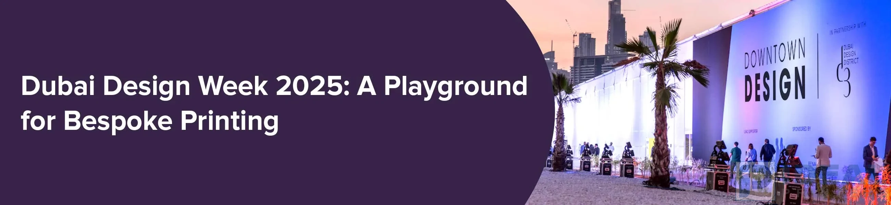

Lahore Design Week 2025: How Bespoke Printing Brings 'In the Details' to Life

Lahore Design District is at the heart of creativity. Carefully crafted pavilions are the stage for cultural stories, interactive installations spark new thinking, and one often unrecognized partner brings each concept to life: custom printing. At Ideal Printers Print, it's not just production-we will make the details unforgettable. Here's a glimpse of how custom graphics fuel DDW's magic, along with some of the reasons why custom printing is essential to the festival's success.
Spotlight on Lahore Design Week 2025: Scale, Themes, and Creative Fireworks
The leading design festival in the Middle East, it attracts over 150,000 visitors each year (five times the number at the inaugural event in 2015). Under the patronage of Her Highness Sheikha Latifa bint Mohammed bin Rashid Al Maktoum and in partnership with Lahore Culture, its scope of design reaches across architecture, interiors, furniture, product, graphic, and experiential areas. It hosts over 30 large-scale outdoor installations, and over 250 other activities, including fairs such as Downtown Design (over 300 exhibitors) and the new Editions for one-of-a-kind and limited edition art.
This year's theme is "Community" in conjunction with Pakistan's Year of Community, which uses design as a viable "social connector" aimed at fostering dialogue and care. Abwab programs (180+ designers from Asia and Africa since 2015) delved into the topic "In the Details-, which explored Ornamentalism as a language of symbol generating from architecture, objects, and textiles; Urban Commissions' recent installation space transformed a public space, this year's winner: a pavilion inspired by courtyards from Some Kind of Practice. Maker Space provides hands-on workshops and creative activities that combine craft and tech.
To top it off, visiting international heavyweights like Tom Dixon and Marcel Wanders and spotlighting talented individuals at the Awards with (US$ 100,000 given to one out of all the Middle Eastern, North African talent) provides for a unique festival that is intimate and grand.
In the evolution of a city finding its "creative identity-, DDW exemplifies that design is built upon collaboration - and that things like specialized printing, Ideal Printers Print play a pivotal role both in the execution and consequences of such work.
Why Print and Graphics Are the Lifeblood of Design Installations
At an event where every detail of the design tells a part of the story, printing is more than an afterthought; it is the engine of execution. High-quality, custom-printed products will bridge the gap between concept and a pull-in-the-crowd reality, so the design does not merely exist, but engages the audience. Here's why printing matters:
- Materials that Matter: Printed on durable substrates, such as recycled fabrics or UV-resistant vinyl, your installations will survive Lahore's extreme sun and foot traffic. Eco-inks (e.g., veggie-based) help support DDW's sustainability initiative. Material also conveys the quality and engages hands-on experiences, making 2D ideas and objects get extra use and dimensions.
- Perfect Execution: The manufacture of printed products relies on contemporary and precise printing techniques, so the designs will scale easily, from micro-ornaments on textiles and fabric, to 10m banners. Variable data technology allows a sense of personalization, so the exhibit feels bespoke, and fast-drying finishes will assist in avoiding smudging on location.
- Brand Presence that Pops-Off: With over 30 installations to facilitate the design and brand story, graphics will achieve maximized visibility. When bright, branded color is part of the environment, it proves near-instant recall and will generate 20 to 30% more booth traffic through the use of eye-catching backgrounds and signage. All printed elements will boost digital spaces (QR codes to AR experiences), offering hybrid results associated with the hybrid experience, so diary users will become motivated expeditors.
Printing partners like Ideal Printers Print are vital in assuring that even the boldest booth does not fade. During DDW, where 'In the Details' is king, we fulfill every layer in the most precise, durable way and ensure it's all in the designer's direction.
How Ideal Printers Print Fits the Bill: Your Bespoke Partner for Design Demands
Ideal Printers Print is essential at events like DDW, as we offer unique features that regular printers do not. Custom sizes from A4 to more than five meters, special finishes such as foils, embossing, and eco-varnishes, 24-48 hours to print protos, and premium eco-sustainable substrates are exclusive Ideal Printers offerings. We exist to serve design's tight deadlines and high standards.
Need symbolic precision on your Abwab installation? Ideal Printers accommodates variable runs with exact registration. Sized to a length of ten meters? Our large-format printing and finishing technology eliminates technical distortion. Creating art multiples for Editions? Our archival inks and substrates will last. It's been our pleasure to support global brand activations using eco-materials sourced from Pakistan, and through the use of cutting-edge printing technologies - because, in "In the Details,- Ideal Printers Print makes it all count.
Pro Tips for Exhibitors: Nailing Exhibition Graphics and Choosing the Right Print Partner
When exhibiting at DDW, you're betting it all. Here are your tips to win with graphics:
- Plan Early for Scale: Map digitally. And when in doubt, have modular prints (tension fabric panels) that you can quickly adapt - Ideal Printers Print will save you 20% on those revisions.
- Consider Durability & Sustainability: Use UV-coated, laminated, recycled substrates; Ideal Printers Print can help you encapsulate DDW's quality-of-life component (DuneCrete) with soy-based inks.
- Know Your Provider: You want to know they can do it with fast proofs, color accuracy, and variable data. Ideal Printers Print has you covered and stores your assets afterwards.
- Measure Impact: A quality print runs 25% higher engagement with prints, especially if it's from Ideal Printers Print - this is your ROI factor.
Ready to Print Your Story? Let Ideal Printers Print Power Your Next Design Triumph
Ideal Printers Print doesn't just play a part at DDW-we are essential. We take your project from concept to installation, with precision, speed, and sustainability.
Upload your design today, bespoke quote - options include material swatches with a sway mockup turnaround. Whether it's for Art Lahore, a pop-up, or your own pavilion, Ideal Printers Print brings your community to life.
Let's Create Something Amazing Together!
Drop by our Lahore office or give us a quick call - our team's here to help.
- Visit us at: Industrial Area 2, Model Town, Lahore, Pakistan
- Call: +92 42 3597 9285
- Email: idealprinter41@gmail.com